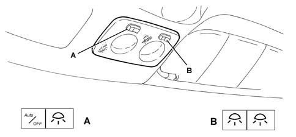
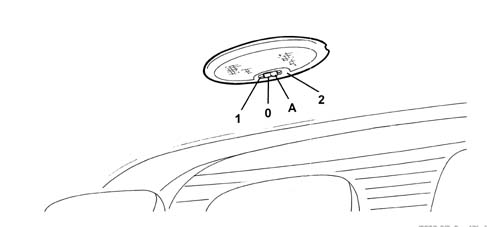

INTRODUCTION - BODYSHELL INTERIOR TRIMS AND FITTINGS
- Path
- Descriptions > 70 FITTINGS > 7040 BODYSHELL INTERIOR TRIMS AND FITTINGS > INTRODUCTION - BODYSHELL INTERIOR TRIMS AND FITTINGS
- Kind
- system description
- Applies to
- engines: 2.0 JTS, 3.2 V6, 1.9 JTD 16V; all production periods
- Interactive page
- https://sloeber94.github.io/elrnDB-aGt/en/#/125000434
Applies to: engines: 2.0 JTS, 3.2 V6, 1.9 JTD 16V; all production periods
SPECIFICATIONS
All vehicle interior trim is designed to satisfy severe international flame-resistance standards. The main components are slow-burning: they do not ignite due to accidental contact (for example, if a cigarette is dropped), flames do not develop and, in the presence of fierce heat they burn to produce strong, dense smoke. Trim design and configuration is aimed at producing a high level of acoustic comfort combined with a high degree of passive safety. All the protrusions that could harm car occupants in the case of impact have been eliminated.
Symbols describing the correct use of the baby seat in the presence of a passenger air bag are shown on the inner side of the passenger side sun visor
Characteristic of working principle 5580C AIR BAG SYSTEM
.
For greater comfort, light bulbs are fitted on either side of the mirrors and on the right and left sun blinds. A courtesy light is fitted in the front of the passenger compartment and another in the rear. The luggage compartment is also fitted with a courtesy light. Puddle lights are housed in the lower rear area of the door panels (for a description of courtesy light operation
Characteristic of working principle 7005M FRONT ELECTRIC WINDOWS
.
PASSENGER COMPARTMENT COURTESY LIGHT SYSTEM
Front courtesy light
View of front courtesy light

A - Left switch
B - Right switch
The front seats are lit by a courtesy light unit that contains two courtesy lights and a spot lamp, each with its own control switch. The courtesy light comes on for about 3 minutes when the door is opened (provided the door is left open). After this it goes off. If the doors are closed, for a 3 minute period the light is left on for about 7 seconds and then turned off gradually so that the car can be started.
When the doors are opened using a remote control, the courtesy light goes on gradually and a timer lasting about 15 seconds activates at the same time. The courtesy light goes off gradually when the doors are locked using a remote control.
The light goes off in any case when the ignition key is turned to ON.
The courtesy light can be set to three positions by means of switch A (left):
- switch in central position (1) - both courtesy lights come on when a door is opened;
- switch moved to the left (0) - both courtesy lights stay off;
- switch moved to the right (2) - both courtesy lights stay on.
The courtesy light may be set to three positions by means of switch B (right):
- switch moved to the left (1) - left light comes on;
- switch moved to the right (2) - right light comes on;
- switch in central position (0) - both lights stay off.
Rear courtesy light
View of rear courtesy light

A - Switch
The rear seats are lit by a courtesy light that comes on for about 3 minutes when a door is opened and then goes off gradually. When the doors are closed, the timer of about 7 seconds is activated, as for the front courtesy light, before the light goes off. When the doors are opened using a remote control, the courtesy light goes on gradually and a timer lasting about 15 seconds activates at the same time. The courtesy light goes off gradually when the doors are locked using a remote control.
The light goes off in any case when the ignition key is turned to ON.
The courtesy light can be set to three positions:
- switch in central position (0) - the courtesy light comes on automatically when a door is opened;
- switch moved to the left (1) - the courtesy light stays off;
- switch moved to the right (2) - the courtesy light stays off.
Vanity mirror courtesy light
Courtesy lights on the driver and passenger side sun visors come on when the cover is opened regardless of ignition key position. They go off automatically when the cover is closed
Puddle light
Puddle lights in the doors feature a two-tone lens. The lower part, which lights the ground, is white while the upper warning light part is red. The courtesy lights come on when one of the doors on both sides is opened, regardless of ignition key position. They stay on for about 3 minutes with the door open and then go off gradually. The courtesy lights go off over a 3 minute period when the door is closed.
PASSENGER COMPARTMENT LIGHTING
Luggage compartment courtesy light
The luggage compartment is made easier to use by a courtesy light located on the right wheel arch trim. This lights up automatically when the tail-gate is opend and goes off when it is closed. The courtesy light may be kept off by depressing one of its sides.
Glove compartment light
The facia glove compartment is fitted with an interior light. The light comes on when the flap is opened and goes off when it is closed.